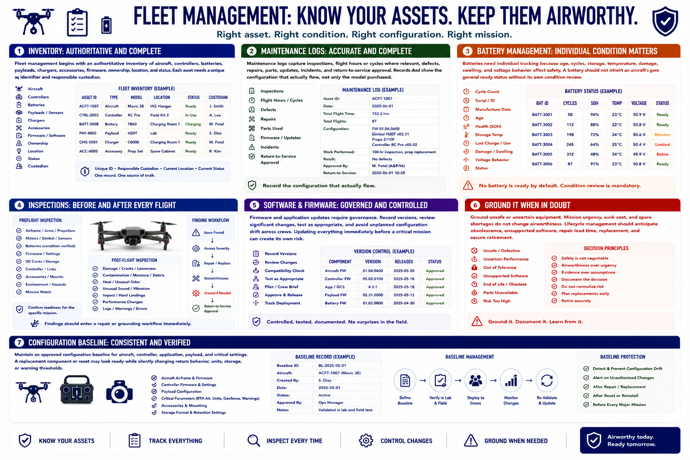

Fleet and Maintenance Management
Connecting to LMS... Progress: in progress

Narration
Fleet management begins with an authoritative inventory of aircraft, controllers, batteries, payloads, chargers, accessories, firmware, ownership, location, and status. Each asset needs a unique identifier and responsible custodian.
Maintenance logs capture inspections, flight hours or cycles where relevant, defects, repairs, parts, updates, incidents, and return-to-service approval. Records should show the configuration that actually flew, not only the model purchased.
Batteries need individual tracking because age, cycles, storage, temperature, damage, swelling, and voltage behavior affect safety. A battery should not inherit an aircraft's general ready status without its own condition review.
Preflight inspections confirm readiness for the specific mission. Post-flight inspections look for damage, contamination, heat, unusual sound, impact, or performance changes. Findings should enter a repair or grounding workflow immediately.
Firmware and application updates require governance. Record versions, review significant changes, test as appropriate, and avoid unplanned configuration drift across crews. Updating everything immediately before a critical mission can create its own risk.
Ground unsafe or uncertain equipment. Mission urgency, sunk cost, and spare shortages do not change airworthiness. Lifecycle management should anticipate obsolescence, unsupported software, repair lead time, replacement, and secure retirement.
Maintain an approved configuration baseline for aircraft, controller, application, payload, and critical settings. A replacement component or reset may look ready while silently changing return behavior, units, storage, or warning thresholds.